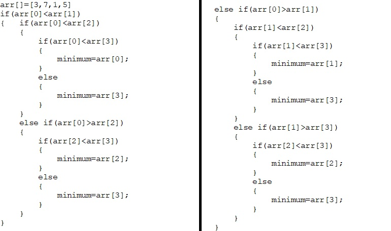
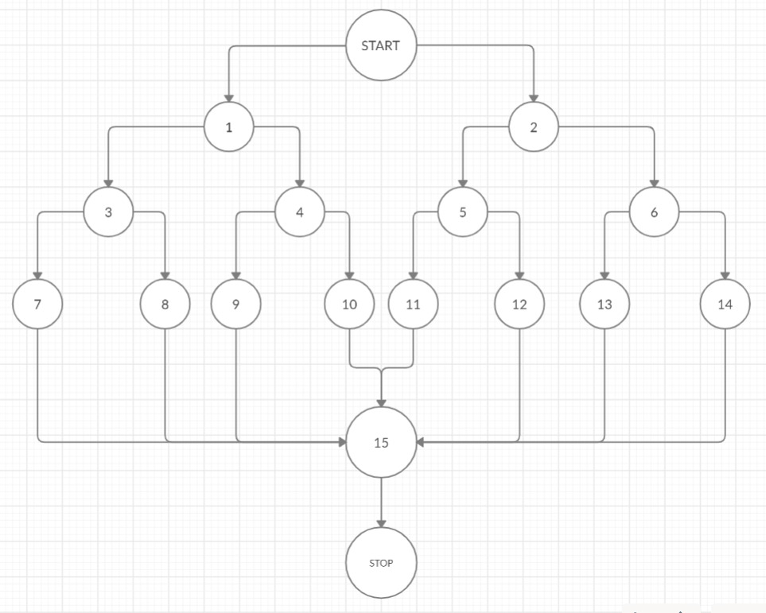
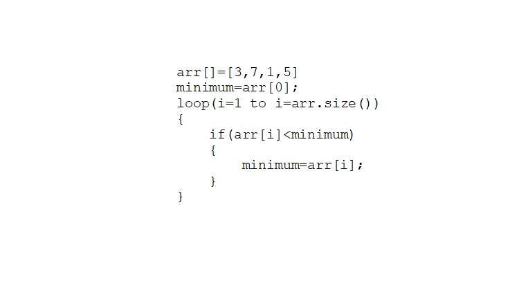
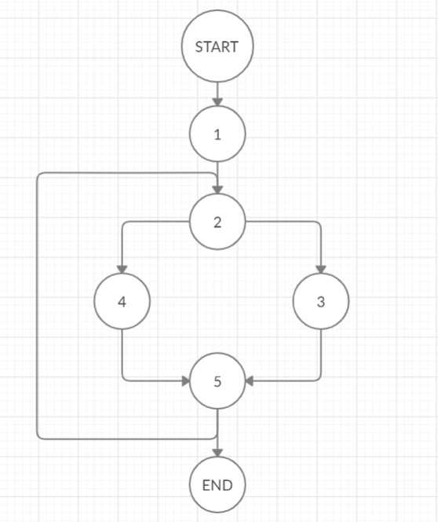

Given below are two codes which show how cyclomatic complexity changes along with the way we write our code. Try to draw the flow graph of the codes given before proceeding. When you are done, simply hover mouse over the mouse over the code to see the flow graph of that code.
You can also click on the button below each code to see solution.


Enter number of vertices in flow graph:
Enter number of edges in flow graph:
Cyclomatic Complexity= E-N+2×P
Number of edges(E)=23
Number of nodes(N)=17
Number of connected components=1
Cyclomatic Complexity= 23-17+1×2= 8


Enter number of vertices in flow graph:
Enter number of edges in flow graph:
Cyclomatic Complexity= E-N+2×P
Number of edges(E)=8
Number of nodes(N)=7
Number of connected components=1
Cyclomatic Complexity= 8-7+1×2= 3
As you would have already noticed that more number of control statements mean more complicated flow graph.